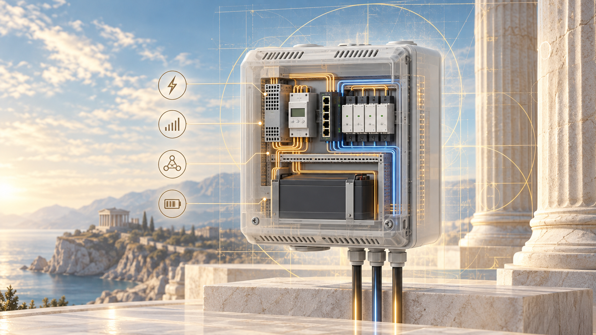

Aura
TESLA Opt.V5
Energija, sa
razlogom.
Lokalni inteligentni hub za energiju koja napaja vaš prostor. Merenje, upravljanje i rezerva objedinjeni su u promišljenom hardverskom dizajnu.
Evropski dizajn 230 V / 50 Hz · Lokalna mrežna arhitektura
Inteligencija počinje
razumevanjem.
Pre nego što energijom
upravljamo, moramo je videti.
Aura TESLA Opt. objedinjuje merenje, lokalno računarstvo i upravljanje potrošačima u jednom zidnom hubu. Svaka funkcija ima svoje mesto, a svaka veza svoju svrhu.
Tro-fazno brojilo posmatra napajanje. Fanless mini-PC je računarska osnova. Četiri relejna kanala čine upravljački sloj. Ethernet okosnica ih povezuje.
Ovo je V5 hardverski dizajn. Softver, puštanje u rad i merene performanse su zaseban posao; u ovom prikazu se ne tvrdi procenat uštede.
Pogledajte unutrašnjost sistemaMesto za
svaku funkciju.
Istražite slojeve koji skup komponenti pretvaraju u koherentan energetski hub.
Vidite celo napajanje.
Shelly Pro 3EM čini merni sloj sistema: polaznu tačku za razumevanje potrošnje na sve tri ulazne faze.
- Komponenta
- Shelly Pro 3EM
- Uloga
- Merenje energije u tri faze
- Veza
- Lokalna Ethernet mreža
Jedno kućište. Jasne odgovornosti.
Ništa nije skriveno
iza kućišta.
Pregledajte V5 listu delova, od računarskog sloja do poslednjeg montažnog elementa.
Preuzmite listu delova ↓ Otvori crtež u punoj rezoluciji ↗
Otvori crtež u punoj rezoluciji ↗| Komponenta | Naveden deo | Količina | Procena ukupno |
|---|
Učitavanje liste delova…
Izvor: lokalni V5 izvoz sa 27 stavki. Procene su iz dizajna, ne aktuelne ponude dobavljača. Blueprint veza trenutno prikazuje drugu reviziju: 31 stavku i $1.136.
Pratite dizajn
do kraja.
Tehnički papir
Kratak pregled i detaljna beleška za profesionalce.
Blueprint projekat
Komponente, pogledi i projektna dokumentacija.
Dostavljena šema
Električni crtež lokalne V5 revizije.
Projektna dokumentacija, ne uputstvo za instalaciju. Mrežni deo i konačnu kompatibilnost mora proveriti kvalifikovani stručnjak.
Jedan ekosistem.
Promišljen način gradnje.
Istražite ideje iza Aura ekosistema, od softverskih agenata do hardvera koji pomažu da zamisle.
Uđite u Aura ekosistem ↗